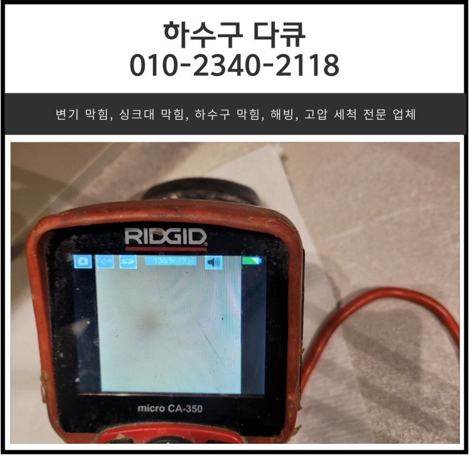
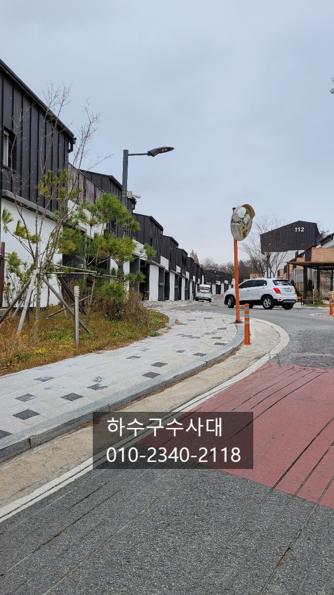
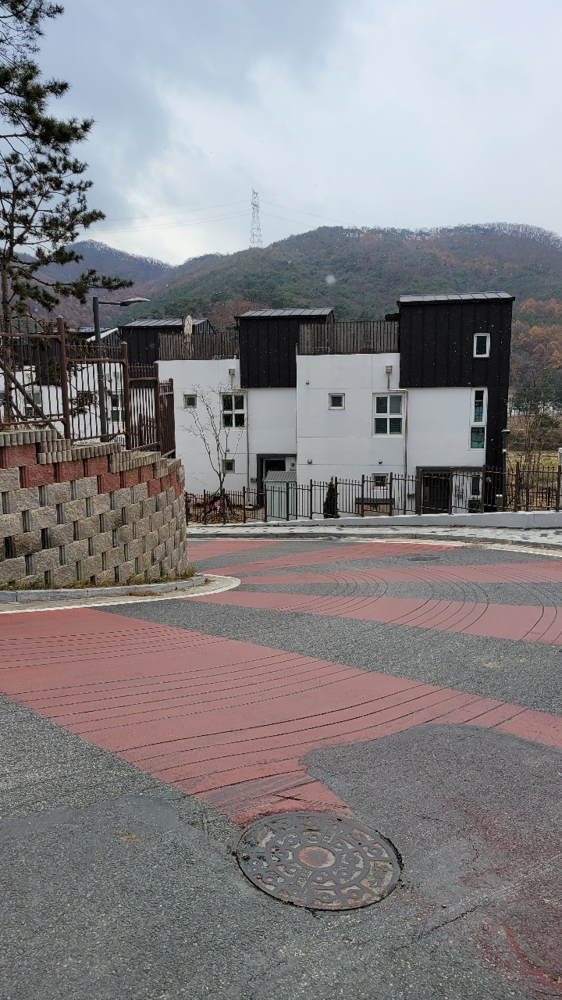
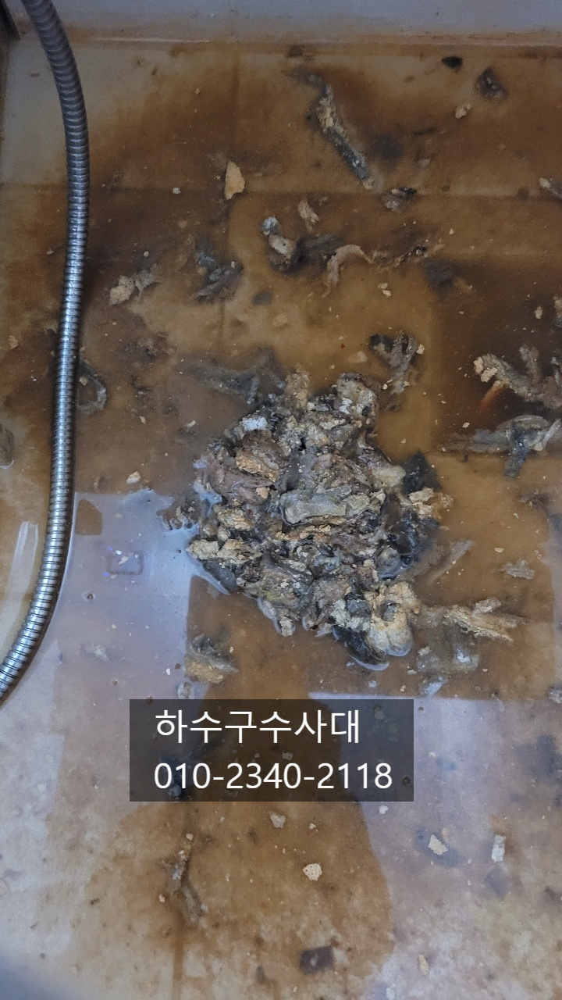
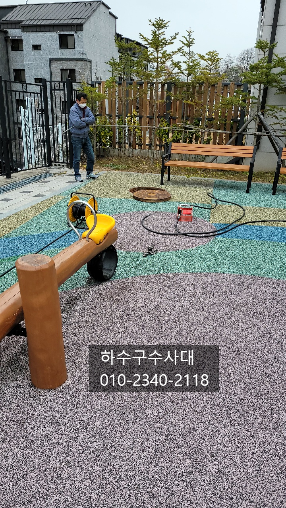
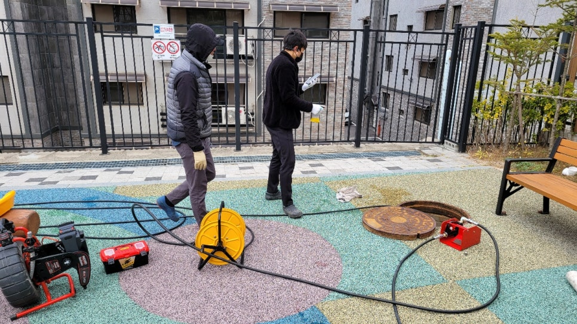
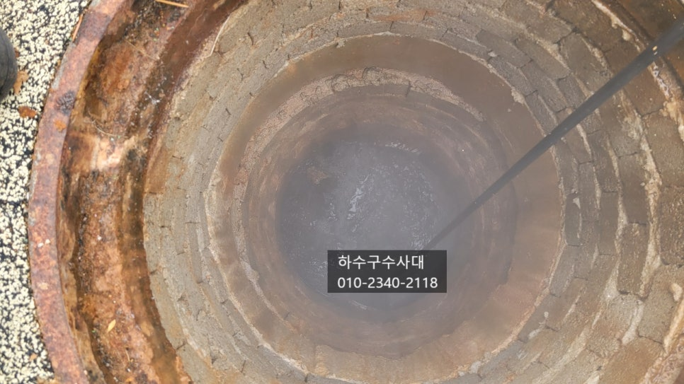

🏠 동부동 싱크대 막힘 용인 유림동 하수구 역류 뚫어주는 설비 업체
용인 처인구 싱크대막힘 전문 시공 후기

📋 작업 개요
- 위치: 용인 처인구, 처인구, 용인
- 서비스 유형: 싱크대막힘, 변기막힘, 하수구막힘, 배관막힘, 맨홀막힘, 역류해결, 뚫는업체, 배관청소, 고압세척
- 작업 일시: 2025. 3. 17. 21:11
- 업체명: 하수구수사대 (010-5615-2118)
🔍 문제 상황
처인구하수구막힘 전원주택하수구막힘 고압세척
안녕하세요^^
오늘은 처인구에 위치한
#전원주택하수구 가 막혀서 여러집에서
문제가 생겼다고 연락을 받고
"하수구수사대"가 출동하였습니다.
보기만해도 힐링이 될정도로 공기좋고 운치좋은 곳에
전원주택마을이 있는곳인데요, 이곳에 메인 하수구가 막혀
여러집에서 이상증상이 보였다고 하여 방문하였습니다.
옆으로 나란히 집들이 지어져 있어 배관도 길게
내려오게 되어있어 메인이 막히면 막힌 구간부터
문제가 생길수 있어요.
한집 욕실에서는 음식물이 하수구에서 올라와 물이 내려가지
않고 심한악취가 나고 있었습니다.
메인배관이 막히게 되면 우리집에서
물을 쓰지않아도 물이 역류하는 증상을 보이는데요
전원주택의 경우 하수배관을 하나로 연결하기 때문에
싱크대에서 물을 쓰면 욕실로 넘치기도 합니다.

🔎 원인 분석
💡 전문가 진단: 하수구수사대010-2340-2118
물이 집안으로 더 넘치기전에 작업을 진행하기로 하였는데요
메인배관이 크고 구간이 길기때문에 고압세척작업을
빠르게 준비하였습니다. 지어진지 5년정도 된 전원주택단지인데요
아무래도 하수와오수 배관을 하나로 사용하고 있어
주기적으로 청소를 해주는것이 다른집에 물이 넘치는
사고를 예방할수 있습니다.
고압세척은 강력한 물줄기를 뿜어주어 배관을 고압으로
씻어주는 작업인데요 강력한 추진력으로 배관을 타고 틀어가면서
배관에 붙어있거나 머물러있는 이물질을 제거하는
방식입니다.
메인배관은 여러세대가 쓰는 배관이라 공동관리를 하게
되는데요 보통 관리실이 있다면
메인배관은 관리실에서 주기적으로 청소를 하게 됩니다.
아파트의 경우 배인배관이 막히게 되면
제일 낮은층으로 역류하는 증상이 생기는데
아무래도 배관이 높은곳에서 내려와서 메인에서
막히면 낮은층에서는 감당할수 없을정도의 물이
역류한답니다. 그래서 정기적인 배관청소는 꼭 필요합니다^^
배관 깊게 붙어있던 기름덩어리와 낮게 깔려있던

🔧 작업 과정
이물질이 검게 나오는것을 확인할수 있는데요
이처럼 배관에는 기름성분이 들어가기도 하지만
흙이 들어가 배관밑에서 썩게되면 검게 변하게 됩니다.
전원주택 집마다 오수받이가 하나씩 있는데 이곳은
한집에서 쓰는 오수와 하수가 만나 메인관으로 나가는
역활을 하며 중간 점검구라고 생각하시면 되세요.
메인에 막혀 점검구에도 물이 못나가고 있으니
시원하게 뚫고 나가는 작업을 진행하였습니다.
중간맨홀에 가득 고여있던 오물들이 서서히 빠지고 있는것을
확인할수 있는데요 휴지가 많이 쌓여있는것이 보여집니다.
하수구수사대
010-2340-2118
작업하던 현장 한 전원주택에서 물이 땅에서 역류하는
증상이 있어 땅을 파 보았는데요 사진처럼 맨홀을
흙으로 덮어놔서 맨홀이 있는지도 관리실에서도
몰랐다고 합니다. 한 주민께서는 본인집 마당에 맨홀이
많아서 모두 흙으로 덮어 텃밭으로 사용하셨답니다.ㅜㅜ
맨홀은 점검구 역할을 하기때문에 언제든지 열어볼수
있게 보이게 나둬야 하는데 말입니다.
원인은 흙으로 덮여있던 맨홀이였는데요 보시는것처럼
나가는메인관을 기름덩어리가 막고있는것을 볼수 있습니다.
기름덩어리가 크다보니 서로 엉겨서 배관을 막고 있었던것이죠.
원인도 찾았으니 배관을 깨끗하게 세척하는 일만 남았어요^^
보시는 화면처럼 고압으로 배관에 붙어있는 이물질을
모두 제거하고 있습니다.
보기만해도 시원하시죠?
맨홀에 가득차있던 물도 시원하게 모두 빠져나갔습니다.
메인배관을 모두 고압세척하고 나서 관리실 직원과
내시경검수후 철수하였는데요
이처럼 원인을 정확하게 알아내고 일을 처리하는것은


✅ 작업 완료
당연하지만 상당히 중요한 일이에요.
고여있던 물이 뚫려 나간다고만 해서 뚫린게
아닌게 원인을 제거하지 않으면 또 막힐수 있기
때문입니다.
"하수구수사대"는 변기막힘부터 메인배관고압세척까지
하수구전문가 입니다 .
하수구가 때문에 고민중이시라면
언제든지 연락주세요^^




⚠️ 주방 싱크대 배관 막힘 예방 수칙
- ✅ 기름기가 묻은 식기나 프라이팬은 설거지 전 키친타올로 반드시 기름때를 닦아내세요.
- ✅ 주기적으로 싱크대 개수대에 뜨거운 물을 가득 받아 한 번에 내려 배관 내부 기름을 씻어내세요.
- ✅ 배수구 거름망을 미세한 필터로 사용하시고 음식물 찌꺼기가 틈으로 새어 들지 않게 관리하세요.
- ✅ 베이킹소다와 식초를 뜨거운 물과 함께 일주일에 한 번씩 부어주면 배관 살균과 막힘 예방에 좋습니다.
💡 핵심 정리
- 확실한 장비 작업(내시경 점검 및 샤프트 스케일링)으로 원인을 뿌리 뽑습니다.
- 작업 후 1년 이내에 동일한 부위 재발 시 100% 무상 A/S 서비스를 보장합니다.
- 서울 · 경기 · 인천 전 지역에 24시간 언제든 긴급 출동할 수 있도록 항시 대기 중입니다.
❓ 자주 묻는 질문 (FAQ)
🚨 용인 처인구 싱크대막힘 문제로 고민이신가요?
정확한 원인 진단과 확실한 시공으로 재발 없는 해결을 약속드립니다.
24시간 긴급 출동 | 서울 · 경기 · 인천 전지역 | 1년 내 재발 시 무상 A/S